韓国 2014年8月20日アップデート
※韓国公式と韓国人プレイヤーから頂いた情報を基にしています。誤訳や韓国独自仕様の可能性もありますので、予めご了承下さい。2014年8月20日 韓国大型アップデートの変更内容一覧
試練のダンジョン実装
不具合修正
試練のダンジョン実装
試練のダンジョンとは？
・Lv400以上で入場できる。
・パーティーでもソロでも進行可能。ソロの場合は進行方法を選択できるが、パーティー時より難易度が上がる。
・制限時間内に全てのモンスターを倒すことでクリアとなり、討伐時間が早いほど多くの経験値を獲得できる。
・パーティーボスモンスター討伐時や特定の秘密ダンジョンクリア時に入手できる試練のクリスタルのかけらを10個集め、試練のクリスタルを作成することで入場できる。
・クリア報酬アイテムは未実装。現在はクリア報酬経験値のみを獲得できる。
試練のダンジョンのクリア報酬アイテムとして、 超越のスクロール?〜?（メインクエストChapter 1 〜5を完了させる）や勇者の証（通常の職業鎧に使用して強化された転生者専用鎧を作成する）などが予定されていますが、現時点では未実装となっています。
詳細は ⇒ 韓国 2014.7.30アップデート 未実装アイテム「転生者専用鎧」
試練のダンジョンへの行き方
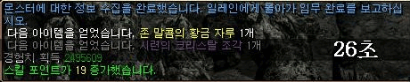
特定の秘密ダンジョンクリア時に、報酬としてジョン・マルコの黄金袋と共に試練のクリスタルのかけらを入手。
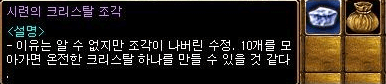
試練のクリスタルのかけら10個で試練のクリスタル1個を作成。
手数料としてLv×500Gがかかります。
試練のクリスタル1個につき1回、試練のダンジョンに入場することができます。
試練のクリスタルのかけらは取引可能、試練のクリスタルは取引不可。
| 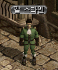 |
冒険家協会ブルンネンシュティグ本部前の NPC（68.150）に話して |
| 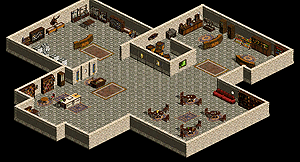 |
試練のダンジョン入場用マップ スターの邸宅 へワープ |
| 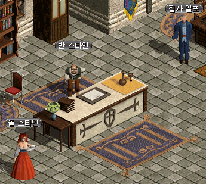 |
左の女性NPC（6.28）に話すと、試練のクリスタルのかけら10個で試練のクリスタル1個を作成することができます。 右の男性NPCに話すと、古都ブルンネンシュティグに戻ります。 |
| 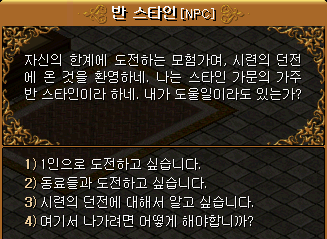 | 中央の老人NPC（8.23）に話すと 試練のダンジョンへワープ ? 一人で探索する。 ? パーティーで探索する。 |
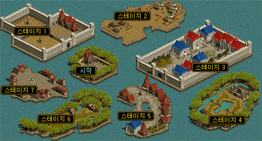
パーティー用マップは中央の開始エリアと7つの戦闘用エリアがあり、7つのうちランダムで3つのエリアに移動します。
| 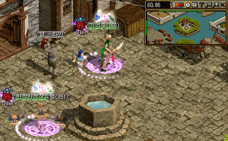 |
開始エリアの NPC（60.82）に話して戦闘エリアへ移動 |
| 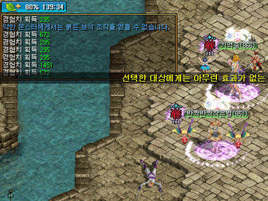 |
プレイヤー Lv866+Lv851の2人 モンスター Lv800代 出現するモンスターはプレイヤーのLvによって変化しますが、モンスターは弱く、経験値も左の通り…。 |
| 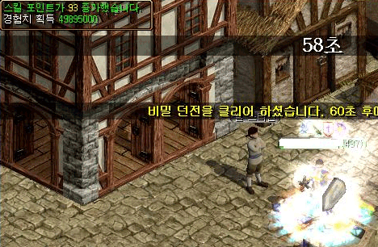 | Lv437のクリア報酬 約5000万 |
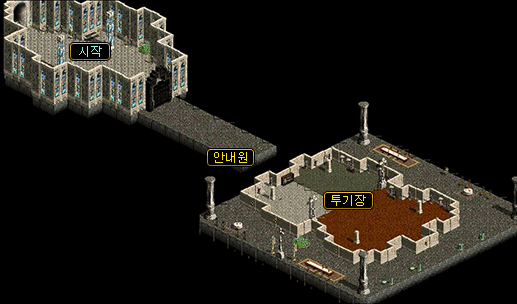
ソロ用マップは左の開始エリアと右の戦闘エリアがあり、1〜20段階のモンスターが順次出現します。
5、10、15、20段階では中ボス1匹が、他の段階では一般モンスター一種類数匹ずつが出現。
5、10、15段階クリア時に、NPCと話してクリア報酬を受け取って終了するか、続けるかを選択することができます。
制限時間は30分。
| 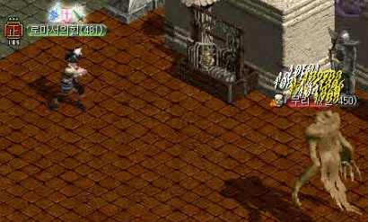 |
プレイヤーLv481 モンスターLv450 1段階 一般モンスター |
| 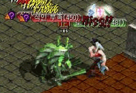 |
2段階 一般モンスター 一般モンスターの討伐経験値は すべて632…。 （スフィア+ベリーあり） |
| 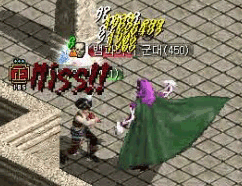 |
3段階 一般モンスター |
| 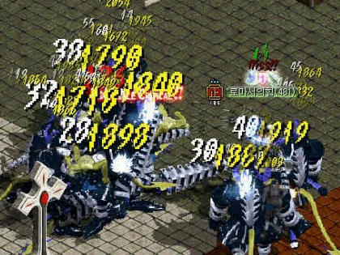 |
4段階 一般モンスター |
| 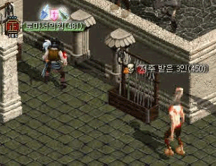 |
5段階 中ボス 討伐経験値は5269…。 （スフィア+ベリーあり） 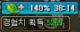 |
| 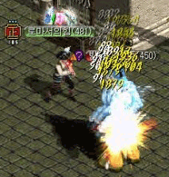 |
6段階 一般モンスター |
| 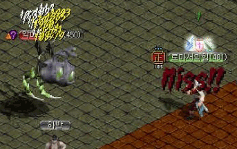 |
7段階 一般モンスター |
 |
8段階 一般モンスター |
| 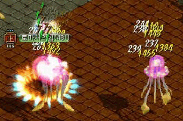 |
9段階 一般モンスター |
| 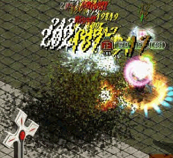 |
10段階 中ボス 即死攻撃あり 死亡した場合、途中からの再入場はできません。 |
| 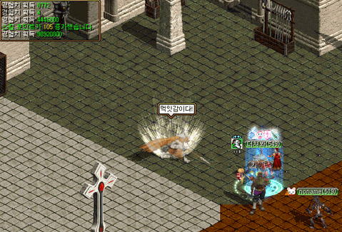 |
|
| プレイヤーLv549 10段階 クリア経験値9892万800 |
|
| 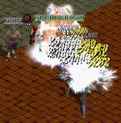 | プレイヤーLv855 20段階 中ボス Lv800 20段階 クリア経験値 なし 10段階 クリア経験値 約200万 |
実際に試練のダンジョンに行った韓国人プレイヤーの感想は、
「ベリーがもったいない、時間の無駄」
「報酬アイテム用ですね」
「文字通りの試練のダンジョンだ…。」
など、不満ばかりのようです。
不具合修正
・獣人スキル[トーマントカウンター]が特定のスキルで攻撃時発動された不具合修正
・バトルリング系のダメージ増加オプションがメイドに適用されていなかった不具合修正
・ネクロマンサー[ダークネスイリュージョン/ダークネストリック]デバフが死亡時に解けなかった不具合修正
・ネクロマンサー[死の香り/パヒュームオブデス]ダメージ適用の不具合修正
・闘士覚醒スキル[鳳凰連破]連続使用の不具合修正
・装備アイテム[八色鳥NX]アイテム属性ダメージ不具合修正
・メイドの水着コスチューム着用時、吸血数値出力の不具合修正